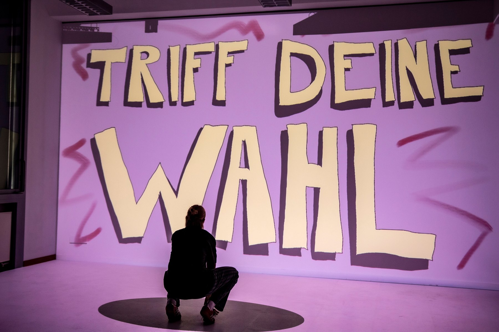
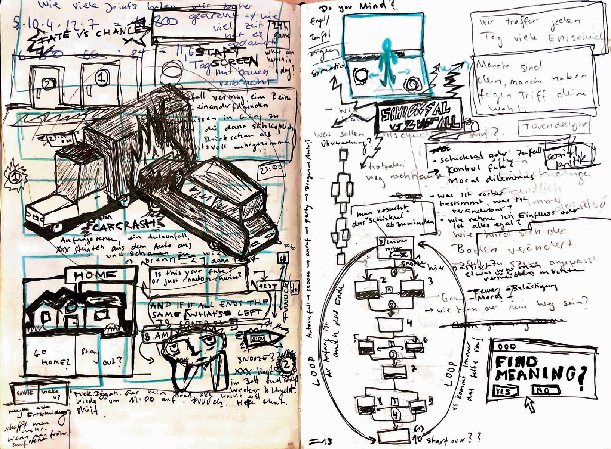

Idee
Jeder Mensch trifft täglich Entscheidungen. Manche sind bedeutungslos. Andere verändern alles. Doch wie viel liegt wirklich in unserer Hand?
Ich glaube eigentlich, dass nichts vorherbestimmt ist. Trotzdem prägen mich meine Herkunft und meine Persönlichkeit. Ist das Leben also Schicksal oder Zufall?
Konzept
Das Spiel ist eine interaktive Installation mit zwei Projektionsflächen. Auf der Wand läuft das Story-Game. Darunter liegt eine Bodenprojektion. Sie dient als Interaktionsfläche.
An verschiedenen Stellen hält die Geschichte an. Die Spieler*innen haben dann immer zwei Möglichkeiten. Durch ihre Bewegung auf der Bodenfläche entscheiden sie sich für eine davon. So beeinflussen sie den weiteren Verlauf der Geschichte.

Umsetzung
Alle Szenen wurden Frame für Frame von Hand gezeichnet. Anschließend wurden sie digital zu einer flüssigen Animation zusammengesetzt.
Die Wiedergabe wurde in TouchDesigner programmiert. Darüber wurden die Szenen auf die beiden Beamer gespielt. Für die Interaktion habe ich in TouchDesigner Buttons eingebaut. Mit ihnen konnte ich das Spiel live steuern. Je nachdem wofür sich die Spieler*innen entschieden haben, habe ich die passende Szene gestartet.